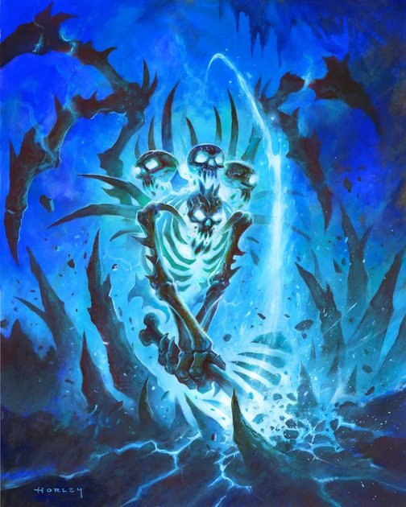

Lord Marrowgar
| Lord Marrowgar | |
|---|---|
|  | |
| Race | Bone wraith " (Undead)" |
| Level | ?? Boss |
| Reaction | Alliance/Horde |
| Affiliation(s) | Scourge/Other Undead |
| Loction | The Spire (Icecrown Citidel) |
| Status | Killable |
{kind=link}
Lord Marrowgar " is the first boss of the Icecrown Citadel raid. Pieced together by the " Lich King " from the bones of a thousand vanquished adventurers, he is the guardian of the Frozen Throne within The Spire, " "and wields the power of the throne itself."
-
1.
Abilities
- 1.1 10-player
- 1.2 25-player
-
2
Strategy
- 2.1 Tanking
-
2.2
DPS
- 2.2.1 Bone Spike Graveyard
- 2.2.2 Coldflame
- 2.2.3 Bonestorm
- 2.3 Healing
- 2.4 Alternative positioning strategy
- 2.5 Heroic Mode
Abilities
10-player
-
BONESTORM! - Attacks nearby enemies in a whirlwind of bone that lasts until canceled.
Is a 3 second cast. Every two seconds while casting, Lord Marrowgar will trigger AoE damage on your raid. This
damage is determined by how close a player is to the boss, and significantly increases the closer you are to him.
Lord Marrowgar will charge 4 times at the furthest target from him before ending Bonestorm. This ability has a 30 second cooldown"
-
BONESTORM! (Heroic Mode) - Bonestorm will now apply a bleed on nearby players that stand close for too long.
This bleed lasts for 15 seconds."
-
BONESTORM! (Heroic Mode) - Bonestorm will now apply a bleed on nearby players that stand close for too long.
This bleed lasts for 15 seconds."
-
Bone Spike Graveyard - Lord Marrowgar raises up a massive bone spike from the ground that impales a targeted ally in
the raid. This spike deals 10% maximum health per second until it is killed. This is a 3 second cast and has 39k hp.
- Bone Spike Graveyard (Heroic Mode) - This is the same as normal except the Bonespike now has increased HP (113k)
-
Coldflame - Lord Marrowgar summons a line of blue fire in a straight line along the ground that deals damage to
all raid members within 8 yards. Deals 6k frost damager per second
- Coldflame (Heroic) - Now deals 9k frost damage per second
- Bone Spike Graveyard - Lord Marrowgar deals 200% more damage on his melee attacks however, he will split this damage between his target and the target's closest ally. This cannot be cast during Bonestorm.
- After 10 minutes, Marrowgar will Enrage, increasing his damage done by 500%, attack speed by 150% and make himself immune to taunt.
25-Player
-
BONESTORM! - Attacks nearby enemies in a whirlwind of bone that lasts until canceled.
Is a 3 second cast. Every two seconds while casting, Lord Marrowgar will trigger AoE damage on your raid. This
damage is determined by how close a player is to the boss, and significantly increases the closer you are to him.
Lord Marrowgar will charge 4 times at the furthest target from him before ending Bonestorm. This ability has a 30 second cooldown"
-
BONESTORM! (Heroic) - Bonestorm will now apply a bleed on nearby players that stand close for too long.
This bleed lasts for 15 seconds."
-
BONESTORM! (Heroic) - Bonestorm will now apply a bleed on nearby players that stand close for too long.
This bleed lasts for 15 seconds."
-
Bone Spike Graveyard - Lord Marrowgar raises up a massive bone spike from the ground that impales a targeted ally in
the raid. This spike deals 10% maximum health per second until it is killed. This is a 3 second cast and has 63k hp.
- Bone Spike Graveyard (Heroic Mode) - This is the same as normal except the Bonespike now has increased HP (113k)
-
Coldflame - Lord Marrowgar summons a line of blue fire in a straight line along the ground that deals damage to
all raid members within 8 yards. Deals 8k frost damager per second
- Coldflame (Heroic) - Now deals 11k frost damage per second
- Bone Slice - Lord Marrowgar deals 200% more damage on his melee attacks however, he will split this damage between his target and the target's closest ally. This cannot be cast during Bonestorm.
- After 10 minutes, Marrowgar will Enrage, increasing his damage done by 500%, attack speed by 150% and make himself immune to taunt.
Strategy
Editor Mode: +
test